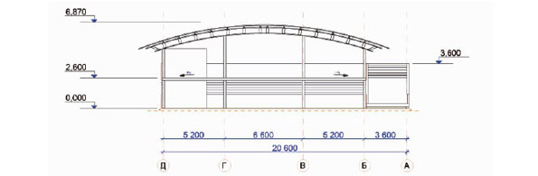

Модульные надстройки применяются на открытых площадях для увеличения количества доступных парковочных мест. Надстройки являются быстровозводимыми конструкциями, монтаж которых не является капитальным строительством, они могут быть демонтированы и перемещены на другую площадку в случае необходимости. Модульная надстройка может быть установлена поэтажно в различных конфигурациях и позволяет спроектировать неограниченное количество парковочных мест. По желанию заказчика надстройка оснащается осветительными приборами и барьерами безопасности. Модульные надстройки превосходно подходят для коммерческого использования, так как хорошо подготовленны к большому машино-потоку за день.
Описание конструкции:Система перекрытий состоит из профилированных элементов в сочетании с арматурой и бетонным покрытием. При создании комплексной стальной конструкции система дополняется балками. Верхний уровень, состоящий из унифицированных модулей, устанавливается на опорные колонны с определенным шагом. Опоры могут быть установлены на различные типы покрытий с различным рельефом местности.
Стандартная конструкция:
-
Сетка опор имеет шаг 5х5м и 7х7 м.;
Максимальный вес автомобиля 2500 кг.;
Мин. Габаритная высота 2,10 м.;
Угол ската рампы от 9 до 12 градусов;
Аддитивная система перекрытий выдерживает эксплуатационные нагрузки до 4,0 кН/м2 без дополнительных арматурных хомутов при несущей поверхности с одной проволочной сеткой арматуры;
Обеспечение противопожарной безопасности: в общем случае, конструкция открытых многоэтажных автомобильных парковок не предлагает никаких требований.
-
Простота и высокая скорость осуществления монтажа вручную позволяет отказаться от использования подъемного крана;
Нет необходимости во вспомогательных опорах на стадии бетонирования;
Ощущение обычной классической парковочной стоянки;
Так как устройство данной системы не предполагает наличие автоматизированных элементов, то отпадает необходимость в их дорогостоящем обслуживании;
Не требует капитального строительства, конструкцию всегда можно разобрать;
Различные стадии строительства (такие как изготовление металлоконструкции, укладка профилированных элементов, армирование и заливка бетона) могут осуществляться практически независимо друг от друга;
Возможно строительство автомобильных стоянок следующих типов:
-
Одноярусная парковка (одна парковочная площадка над уровнем улицы);
Плоская парковка (парковочные площади на нескольких ярусах с отдельными пандусами для выезда и въезда);
Многоуровневая автомобильная парковка (парковочные уровни на полуэтажах с короткими пандусами между парковочными уровнями).
Описание двухэтажного минипаркинга на 49 машиномест.
1. Общие положения.
Настоящее эскизное решение разработано с целью организации строительства быстровозводимых 2-х этажных автостоянок в различных градостроительных ситуациях г. Минска на внутридворовых территориях. Это позволит снизить количество припаркованного автотранспорта во внутридворовой территории. Автомобили будут под круглосуточной охранной, не будут засыпаться снегом зимой, летом будут закрыты от нагрева солнцем. Автомобили не будут заставлять детские площадки, зелёные зоны дворов, тротуары. Автотранспорт не будет загромождать проезды, препятствуя работе коммунальных служб.
2. Генеральный план.
Здание автостоянки может быть расположено в различных условиях городской застройки-во дворах, рядом с проездами и магистралями, на пустыря, рядом с торговыми и небольшими бизнес центрами.
3. Архитектурно–строительные решения.
В данном эскизном решении разработан 2-х этажный минипаркинг размером в плане 17,0 х 36,4 вместимостью 49 машиномест.
Хранение автомобилей манежное. Высота 1-го этажа 2,6м высота 2-го этажа – 3, 0-4, 3 м
Места хранения автомобилей имеют размер в плане 2,6 х 5,2м
Для въезда автомобилей на 2-й этаж предусмотрен пандус шириной 3,6 м
Для выхода и эвакуации людей со 2-го этажа предусмотрены две лестничные клетки
Максимальная отметка верха кровли – 6,9 м
Архитектурное решение здания основано на сочетании светопрозрачной кровли из лексана по ажурных сводчатым фермам и ограждающих конструкций из перфорированного крашенного листа.
4. технологические решения.
Основные технические и технологические решения объекта приняты исходя из общей градостроительной ситуации, композиционного плана размещения сооружения на отведённом земельном участке строительства и принятой схеме организации движения транспорта.
В помещении автостоянки допускается хранение автомобилей с бензиновым и дизельными двигателями.
5. Противопожарные мероприятия
Объект относится к IV степени огнестойкости. Места стоянок автомобилей по пожарной безопасности относятся к категории В1. По пожарной опасности к классу «П-1» по ПУЭ. По функциональной пожарной опасности здание относится к классу Ф5.2 (СНиП 21-01-97) по СНБ 2 02.01-98
В проекте пожаротушения предусмотрено:
-
1. Устройство внутреннего противопожарного водопровода из сухотруба с выведенными наружу патрубками, оборудованными вентилями и соединительными головками для подключения пожарной техники (п. 65 СПиП 21-02-99);
2. Установка пожарных шкафов с расположением в них огнетушителей;
3. Установку огнетушителей по всему периметру.
6. Технико-экономические показатели.
Площадь застройки – 731, 12 м2
Общая площадь – 1349, 92 м2
Вместимость – 49 м/м
Максимальная отметка верха кровли – 6,9м
Ветровая нагрузка относится ко II – району с типом местности « В» и нормативным ветровым давлением 0,23 кПа
Р-н застройки по СНиП 2 01.07-85.
Снеговая нагрузка относится к району II Б с нормативным весом снегового покрова на 1м2., горизонтальной поверхности земли 1, 2 к Па.
Размещение автомобилей в двухэтажном минипаркинге на 49 машиномест.
1-й этаж2-й этаж
Вид в разрезе
